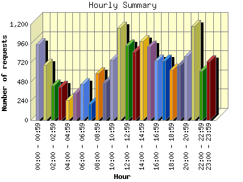
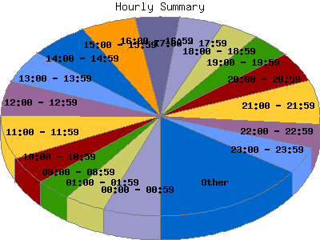

Report generated by Analog 5.91beta1 and Report Magic 2.21
|
Web Server Statistics for "Harish Narayanan (hnarayan) - March 2004" Report generated by Analog 5.91beta1 and Report Magic 2.21 |
The Hourly Summary identifies the level of activity broken down by each hour. Remember that one page hit can result in several server requests as the images for each page are loaded. This summary also compares the level of activity during working hours and after hours as a total for the report time frame.


| Hour | Number of requests | Number of bytes transferred | Percentage of the bytes | Percentage of the requests | |
|---|---|---|---|---|---|
| 1. | 00:00 - 00:59 | 952 | 15.768 MB | 5.30% | 5.77% |
| 2. | 01:00 - 01:59 | 690 | 13.652 MB | 4.59% | 4.18% |
| 3. | 02:00 - 02:59 | 433 | 7.263 MB | 2.44% | 2.62% |
| 4. | 03:00 - 03:59 | 419 | 9.655 MB | 3.24% | 2.54% |
| 5. | 04:00 - 04:59 | 248 | 4.372 MB | 1.47% | 1.50% |
| 6. | 05:00 - 05:59 | 332 | 6.534 MB | 2.20% | 2.01% |
| 7. | 06:00 - 06:59 | 451 | 9.154 MB | 3.08% | 2.73% |
| 8. | 07:00 - 07:59 | 202 | 4.134 MB | 1.39% | 1.22% |
| 9. | 08:00 - 08:59 | 582 | 11.436 MB | 3.84% | 3.52% |
| 10. | 09:00 - 09:59 | 471 | 15.528 MB | 5.22% | 2.85% |
| 11. | 10:00 - 10:59 | 752 | 12.105 MB | 4.07% | 4.55% |
| 12. | 11:00 - 11:59 | 1,158 | 27.096 MB | 9.11% | 7.01% |
| 13. | 12:00 - 12:59 | 935 | 16.552 MB | 5.56% | 5.66% |
| 14. | 13:00 - 13:59 | 862 | 11.980 MB | 4.03% | 5.22% |
| 15. | 14:00 - 14:59 | 984 | 9.257 MB | 3.11% | 5.96% |
| 16. | 15:00 - 15:59 | 919 | 12.869 MB | 4.32% | 5.57% |
| 17. | 16:00 - 16:59 | 741 | 21.008 MB | 7.06% | 4.49% |
| 18. | 17:00 - 17:59 | 745 | 13.317 MB | 4.47% | 4.51% |
| 19. | 18:00 - 18:59 | 629 | 10.920 MB | 3.67% | 3.81% |
| 20. | 19:00 - 19:59 | 682 | 8.483 MB | 2.85% | 4.13% |
| 21. | 20:00 - 20:59 | 798 | 11.484 MB | 3.86% | 4.83% |
| 22. | 21:00 - 21:59 | 1,175 | 22.955 MB | 7.71% | 7.12% |
| 23. | 22:00 - 22:59 | 618 | 9.122 MB | 3.06% | 3.74% |
| 24. | 23:00 - 23:59 | 734 | 12.949 MB | 4.35% | 4.45% |
| Work Hours (8:00am-4:59pm) | 7,404 | 137.832 MB | 46.32% | 44.84% | |
| After Hours (5:00pm-7:59am) | 9,108 | 159.764 MB | 53.68% | 55.16% | |
This report was generated on August 5, 2004 21:39.
Report time frame March 1, 2004 00:01 to March 31, 2004 23:44.
| Web statistics report produced by: | |
 Analog 5.91beta1 Analog 5.91beta1 |  Report Magic 2.21 Report Magic 2.21 |